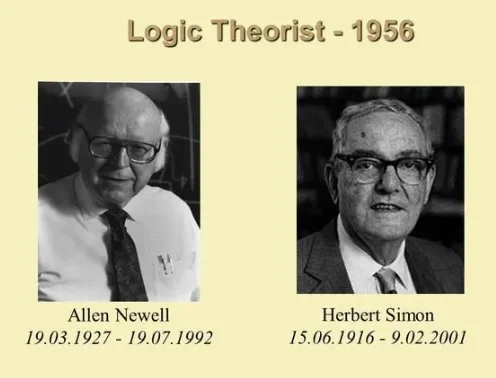

De geschiedenis van kunstmatige intelligentie (AI) kent verschillende belangrijke mijlpalen:
Dartmouth-conferentie (1956): Deze conferentie wordt beschouwd als de geboorte van AI,
waarbij toonaangevende onderzoekers bijeenkwamen om de mogelijkheden van het creëren van
intelligente machines te bespreken.

De Logic Theorist (1956): Ontwikkeld door Allen Newell, J. C. Shaw en Herbert A. Simon, was
dit programma het eerste dat heuristieken gebruikte om problemen op te lossen en wiskundige
stellingen te bewijzen.

General Problem Solver (GPS) (1957): De General Problem Solver (GPS) was een computerprogramma ontwikkeld in 1957 door Herbert Simon, J.C. Shaw, en Allen Newell aan de RAND Corporation.
Het doel ervan was om problemen op te lossen door middel van logisch redeneren en probleemoplossend vermogen, in plaats van door specifieke instructies te volgen voor elk individueel probleem.
GPS was een van de eerste pogingen om kunstmatige intelligentie te creëren. Het werkte door middel van een zoekalgoritme dat probeerde om vanuit een gegeven beginstaat naar een doelstaat te navigeren door middel van het toepassen van operators. Deze operators waren acties die de staat van het probleem veranderden. Het programma zou de mogelijke acties evalueren, de meest veelbelovende kiezen en deze iteratief toepassen totdat het de doelstaat bereikte.
De Perceptron (1957): Gemaakt door Frank Rosenblatt, was de perceptron een van de vroegste
neurale netwerkmodellen, in staat om eenvoudige taken te leren.

Shakey de Robot (1966): Ontwikkeld door SRI International, was Shakey een van de eerste
mobiele robots die zijn omgeving kon waarnemen en acties kon ondernemen op basis van die
waarneming.
Expertsystemen (1970s-1980s): Expertsystemen, zoals MYCIN en DENDRAL, werden ontwikkeld om
menselijke expertise op specifieke gebieden, zoals medische diagnose en chemische analyse, na te
bootsen.
MYCIN: Een expertsystemenproject van Stanford dat medische diagnostiek automatiseerde, vooral voor bloedinfecties. Het gebruikte kennis van medische experts om diagnoses te stellen op basis van symptomen van patiënten.
DENDRAL: Ontwikkeld aan Stanford, analyseerde chemische data om de structuur van organische verbindingen vast te stellen. Het was een vroege demonstratie van computers die complexe probleemoplossingstaken uitvoerden die normaal menselijke expertise vereisen.
Backpropagation-algoritme (1986): Deze doorbraak in neurale netwerktraining, ontwikkeld door
David Rumelhart, Geoffrey Hinton en Ronald Williams, maakte de training van diepe neurale netwerken
mogelijk.
Deep Blue vs. Kasparov (1997): IBM's Deep Blue versloeg wereldkampioen schaken Garry
Kasparov, waardoor het potentieel van AI in complexe besluitvormingstaken werd aangetoond.

Watson (2011): IBM's Watson versloeg menselijke kampioenen op de quizshow Jeopardy!, waarmee
vooruitgang werd geboekt in natuurlijke taalverwerking en kennisrepresentatie.
AlphaGo (2016): Ontwikkeld door DeepMind, versloeg AlphaGo wereldkampioen Go Lee Sedol,
waarmee de kracht van reinforcement learning en neurale netwerken bij het beheersen van complexe
spellen werd aangetoond.
AI-model GPT-3 van OpenAI (2020): Een geavanceerd AI-model gelanceerd in 2020, dat
indrukwekkende prestaties levert in natuurlijke taalverwerking.
Deze mijlpalen vertegenwoordigen significante vooruitgang in AI-onderzoek en -ontwikkeling, die de
koers van het vakgebied en de praktische toepassingen ervan hebben beïnvloed.